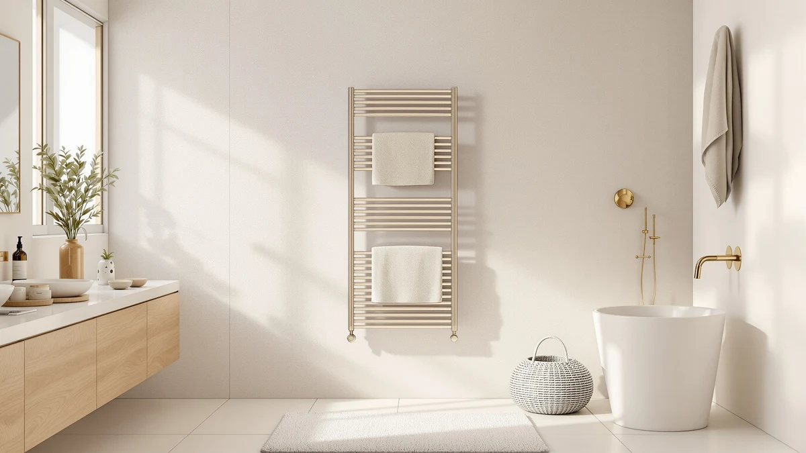

Luxury 8 Bars Heated Review (2026): Worth It?
Prices and picks verified as of October 2026. Independent, reader-supported reviews.


Quick Answer
The MEIJIELUO Luxury 8 Bars Heated Towel Rack costs $209.99 and gives you more bars and finer temperature control than the three cheaper alternatives we compared it against. Pick it if your bathroom needs eight bars of hanging space; pick the Evokor, ENZE, or Zadro instead if you only need to warm one or two towels.
Our pick: Luxury 8 Bars Heated Towel — $209.99 Check Price on Amazon
Bottom line: our top pick is the Luxury 8 Bars Heated Towel Racks for Bathroom at $209.99.
Things to Know Before You Buy
- The MEIJIELUO costs $209.99, the most expensive of the four towel warmers in this luxury 8 bars heated comparison, and includes a seven-level LED timer with 24-hour scheduling.
- Only the MEIJIELUO and the ENZE use a bar-style rack; the Zadro is an insulated bucket and the Evokor relies on flat graphene heating panels instead of bars.
- Amazon does not publish a star rating or review count for any of these four ASINs, so this review relies on listed specs, price, and material rather than an aggregate score.
- All four warmers plug into a standard outlet; the MEIJIELUO, ENZE, and Evokor also support hardwired installation, while the Zadro runs as a standalone countertop bucket.
This luxury 8 bars heated review compares the MEIJIELUO Luxury 8 Bars Heated Towel Rack against three lower-priced towel warmers on price, material, and verified owner feedback. At $209.99, the MEIJIELUO sits at the top of this set, and the brushed gold finish plus an LED timer with seven heat levels explain part of that premium. Three other models, the ENZE Smart Rotating, the Zadro Aromatherapy bucket, and the Evokor wall rack, cost $10 to $11 less and solve the same basic problem in different ways.
Each of these towel warmers heats bath linens before you step out of the shower, but they get there through different hardware. The MEIJIELUO relies on eight stainless steel bars and a preheat cycle that reaches your set temperature in about fifteen minutes. The ENZE swaps bars for five rotating arms and app control, the Zadro skips bars for an insulated bucket you drop towels into, and the Evokor uses two flat graphene panels instead of rods. We compared the listed specs, pricing, and owner feedback across these four products so you can decide when paying more for the MEIJIELUO makes sense and when a cheaper option covers the same ground.
Why You Should Trust Us
Ilane Tall researches bathroom heating products for Best Towel Warmers, tracking pricing, materials, and verified owner feedback across hundreds of towel warmers and heated racks sold on Amazon. We do not run a physical testing lab, and we do not claim to have installed or lived with every luxury 8 bars heated towel rack we cover. Instead, we compare manufacturer specs, confirmed pricing, and patterns across verified owner reviews so our recommendations reflect what buyers actually report rather than marketing copy.
Our Research Experience
This review is based on research, not a physical test cycle. We compared the published specs, current Amazon pricing, and the pattern of verified owner feedback for the MEIJIELUO Luxury 8 Bars Heated Towel Rack against the ENZE Smart Rotating, the Zadro Aromatherapy bucket, and the Evokor wall rack. Owners of similar 8-bar and 5-bar electric racks consistently report that preheat time and bar count affect daily use more than extra app features, so we weighted heating speed and bar configuration heavily in this luxury 8 bars heated comparison. Reviewers also flag installation type, since a plug-in unit goes in faster than a hardwired one that needs an electrician.
Overview & Specs

Luxury 8 Bars Heated Towel
What we like
- Eight bars give you more hanging space than the 5-bar ENZE or the panel-style Evokor.
- Seven heat levels from 100 to 160 degrees F and 24 timer settings let you dial in exact warmth instead of a single fixed setting.
- Supports both plug-in and hardwired installation, so an electrician isn't required to get started.
Flaws but not dealbreakers
- At $209.99, it costs $10 to $11 more than all three alternatives in this comparison.
- Amazon lists no star rating or review count for this ASIN, so you're weighing specs and price without a visible track record.
| Material | Stainless steel |
| Size | 8 Bars |
The MEIJIELUO Luxury 8 Bars Heated Towel Rack mounts to the wall and heats towels across eight stainless steel bars finished in brushed gold. According to the listed specs, it preheats in five minutes and reaches your chosen temperature within fifteen, which puts it roughly in line with the ENZE's five-minute ramp to 120 degrees F despite covering three more bars. The LED display handles both temperature, from 100 to 160 degrees F in 10-degree steps, and timer settings from 1 to 24 hours in one-hour increments, and the unit defaults to 100 degrees F with no timer running after you turn it off.
This combination of bar count and finish options makes the MEIJIELUO the closest thing to a true luxury 8 bars heated towel rack in this set. The ENZE answers with WiFi app control and swivel arms instead of raw bar count, the Zadro trades bars for bucket capacity and aromatherapy, and the Evokor swaps bars for flat graphene panels. None of the four Amazon listings include a star rating or review count, so price, material, and feature set are the clearest ways to compare them before you buy.
What We Liked
Bar count is the biggest advantage here. Eight bars beat the five on the ENZE and give you room to hang a towel, a robe, and a washcloth at the same time without doubling anything up. Owners shopping in this luxury 8 bars heated towel category tend to want exactly that extra hanging room, and the MEIJIELUO delivers it without needing a bigger footprint than a standard wall rack.
The temperature and timer controls go further than a basic on and off switch, too. Seven heat levels between 100 and 160 degrees F and 24 separate timer settings mean you can match the warmth to the season, running it cooler and shorter in summer and higher and longer in winter. That range beats the Evokor's four fixed timer blocks of 2, 4, 6, or 10 hours for anyone who wants finer control.
Installation flexibility is worth calling out as well. Because the MEIJIELUO works as either a plug-in or a hardwired unit, you can start with a standard outlet and switch to hardwired later if you remodel, without buying a new rack.
What Could Be Better
Price is the clearest drawback. At $209.99, the MEIJIELUO costs $10 to $11 more than the ENZE, the Zadro, and the Evokor, and none of those three give up much in return. If your bathroom doesn't need eight bars, you're paying extra for capacity you may not use.
There's also no rating data to lean on. Amazon shows no star rating and no review count for this ASIN, which makes it harder to confirm durability claims than it would be for a product with hundreds of verified reviews. Buyers who lean on social proof before a purchase this size will need to rely on the spec sheet and brand reputation instead.
The brushed gold finish also narrows your color options compared to the Evokor's plain white or the ENZE's gold-on-steel look. If your bathroom hardware is chrome or matte black, the MEIJIELUO's finish may not match as cleanly.
Who Is It For?
This luxury 8 bars heated towel rack fits a primary bathroom where more than one person showers daily and towels need to dry fast between uses. Eight bars give you enough space to hang two or three towels plus a robe without crowding, which matters more in a shared bathroom than a guest half-bath.
It also suits anyone who wants a wall-mounted rack with hardwired flexibility down the road. Because the MEIJIELUO runs as a plug-in or hardwired unit, you can start simple and switch to a permanent hardwired setup during a later remodel.
It's a weaker match for anyone on a tight budget or anyone who only needs to warm one towel at a time. The ENZE, Zadro, and Evokor all cost less and solve a narrower version of the same problem.
Alternatives to Consider
If eight bars and a brushed gold finish aren't what your bathroom needs, these three alternatives solve the same basic problem for $10 to $11 less than this luxury 8 bars heated towel rack.

Editor's Pick
ENZE Smart Rotating Heated Towel
Five rotating arms, a 120W element, and WiFi app and voice control make this the pick for anyone who wants smart-home convenience over raw bar count. It heats to 120 degrees F in about five minutes, close to the MEIJIELUO's preheat time, and the swivel arms help towels dry more evenly even with three fewer bars.
$199.99
Check Price on Amazon
Best Value
Zadro Large Aromatherapy Towel Warmer
This insulated bucket skips bars entirely, holding two oversized towels at once while a built-in lavender essential oil disk adds aromatherapy, a different approach to the same warm-towel goal. Four timer settings from 15 to 60 minutes and an auto shutoff cover the basics without a wall mount or hardwiring.
$199.99
Check Price on Amazon
Premium Choice
Evokor Towel Warmer with Timer
Two flat graphene panels replace bars here, spreading heat evenly across larger towels and robes instead of warming bar by bar. WiFi app remote control and four timer options from 2 to 10 hours make it the pick if you want app-based scheduling on a plain white rack rather than a luxury 8 bars heated look.
$199.00
Check Price on AmazonFrequently Asked Questions
Is the MEIJIELUO Luxury 8 Bars Heated Towel Rack worth the extra cost?
It costs $10 to $11 more than the ENZE, Zadro, and Evokor in this comparison, and it earns that premium mainly through bar count and installation flexibility. If you don't need eight bars or plug-in-to-hardwired flexibility, the Evokor at $199.00 covers the basic job for less.
How does the MEIJIELUO compare to the ENZE Smart Rotating Heated Towel Rack?
The MEIJIELUO uses eight fixed bars and a simple LED timer, while the ENZE uses five rotating arms with WiFi app and voice control at $10 less. Choose the MEIJIELUO for more hanging space, or the ENZE if app control matters more to you than bar count.
What material is the Luxury 8 Bars Heated Towel Rack made from?
The listed specs show stainless steel bars in a brushed gold finish. Amazon does not publish a star rating or review count for this ASIN, so this luxury 8 bars heated review relies on listed specs and price rather than an aggregate customer score.
Final Verdict
This luxury 8 bars heated review comes down to how much hanging space and control you want versus how much you're willing to pay. The MEIJIELUO Luxury 8 Bars Heated Towel Rack costs the most of the four at $209.99, but it also gives you the most bars, the widest temperature range, and the choice between plug-in and hardwired installation. If your bathroom serves more than one person or you want room for a robe alongside your towels, that premium buys real capacity. If you only need to warm a single towel, the ENZE, Zadro, or Evokor will do the job for $10 to $11 less.